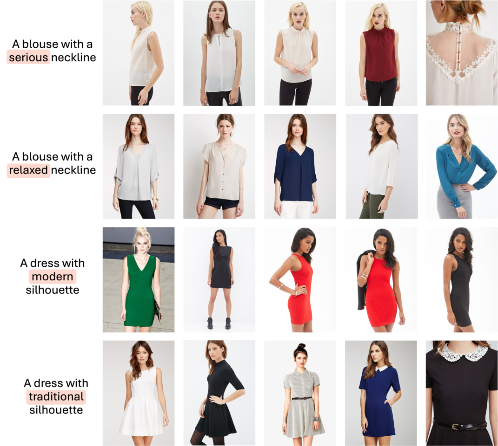
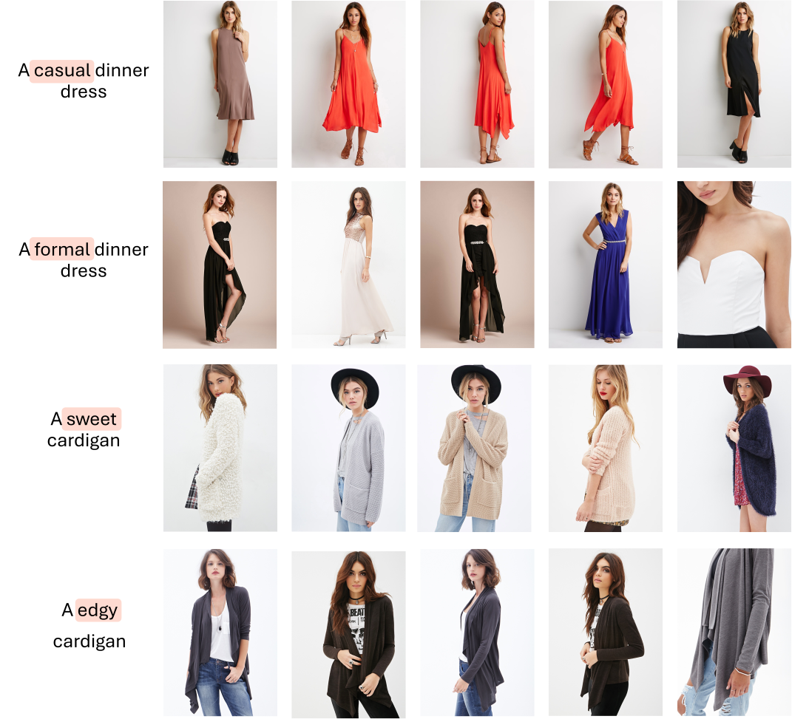

Natural language goes beyond dryly describing visual content. It contains rich abstract concepts to express feeling, creativity and properties that cannot be directly perceived. Yet, current research in Vision Language Models (VLMs) has not shed light on abstract-oriented language.
Our research breaks new ground by uncovering its wide presence and under-estimated value, with extensive analysis. Particularly, we focus our investigation on the fashion domain, a highly-representative field with abstract expressions. By analyzing recent large-scale multimodal fashion datasets, we find that abstract terms have a dominant presence, rivaling the concrete ones, providing novel information, and being useful in the retrieval task. However, a critical challenge emerges: current general-purpose or fashion-specific VLMs are pre-trained with databases that lack sufficient abstract words in their text corpora, thus hindering their ability to effectively represent abstract-oriented language.
We propose a training-free and model-agnostic method, Abstract-to-Concrete Translator (ACT), to shift abstract representations towards well-represented concrete ones in the VLM latent space, using pre-trained models and existing multimodal databases. On the text-to-image retrieval task, despite being training-free, ACT outperforms the fine-tuned VLMs in both same- and cross-dataset settings, exhibiting its effectiveness with a strong generalization capability. Moreover, the improvement introduced by ACT is consistent with various VLMs, making it a plug-and-play solution.
Qualitative examples of retrieval using our ACT, on the test split of DeepFashion.
 @inproceedings{talon2025seeing,
title={Seeing the Abstract: Translating the Abstract Language for Vision Language Models},
author={Talon, Davide and Girella, Federico and Liu, Ziyue and Cristani, Marco and Wang, Yiming},
booktitle={Proceedings of the IEEE/CVF Conference on Computer Vision and Pattern Recognition},
year={2025}
}